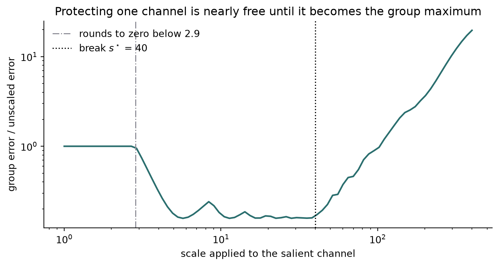
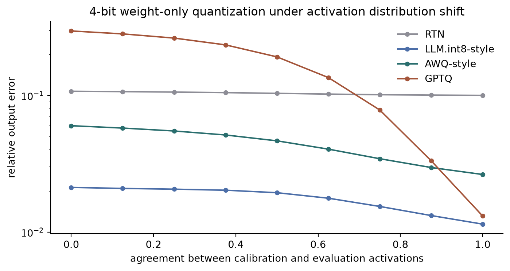

LLM.int8, GPTQ, AWQ, and SmoothQuant solve the same layerwise least-squares problem under four different constraints, and the constraint predicts which one overfits its calibration set.
Author
Diego Filippo Marino
Published
August 14, 2026
The literature on post-training quantization of large language models reads like a catalogue of unrelated tricks. LLM.int8() splits a few hidden dimensions into a separate 16-bit matrix multiply (Dettmers et al. 2022). GPTQ walks along the input dimension, rounding one column at a time and correcting the rest with inverse-Hessian information (Frantar et al. 2023). AWQ multiplies salient input channels by a scalar before rounding and divides it back afterwards (Lin et al. 2024). SmoothQuant divides the activations by a per-channel factor and folds that factor into the weights (Xiao et al. 2023).
Four papers, four mechanisms, four sets of experiments. Underneath, they all minimize the same quadratic form. What separates them is the feasible set they minimize it over, and that choice, not the cleverness of the mechanism, determines both the achievable error and the amount of calibration data each method needs.
This article writes the four methods in a common notation, derives why activation-aware scaling has a kink rather than an optimum in the interior, and runs a controlled experiment where the calibration distribution and the evaluation distribution differ. The last part is where the unified view earns its keep: it predicts the calibration-hunger gap that AWQ reports empirically, from a parameter count alone.
The objective every method shares
Take one linear layer, activations X \in \mathbb{R}^{n \times d_{\text{in}}} collected from a calibration set, weights W \in \mathbb{R}^{d_{\text{in}} \times d_{\text{out}}}, output Y = XW. A quantizer returns some \widehat W representable in the target format. The layerwise reconstruction error is
\mathcal{L}(\widehat W) = \bigl\lVert X(\widehat W - W) \bigr\rVert_F^2
= \operatorname{tr}\bigl(E^\top H E\bigr),
\qquad E = \widehat W - W,
\qquad H = X^\top X.
\tag{1}
First, it separates across output columns. Writing E = [e_1, \dots, e_{d_{\text{out}}}] gives \mathcal{L} = \sum_c e_c^\top H e_c, so each output neuron is an independent problem in \mathbb{R}^{d_{\text{in}}} with the same metric H. Every method exploits this, which is why they all quantize one layer at a time and never need a backward pass through the network.
Second, H is not the identity. It is the uncentered second-moment matrix of the activations, and in a transformer it is spectacularly anisotropic in two separate ways. Its diagonal is heavy-tailed, because a handful of hidden dimensions carry activations two orders of magnitude larger than the rest, and those dimensions are the same across layers and across nearly every token (Dettmers et al. 2022). Its off-diagonal is large, because hidden states are far from having independent coordinates. Rounding treats all coordinates alike. The loss does not.
That mismatch is the whole subject. The four methods are four answers to the question of how to reconcile an isotropic rounding grid with an anisotropic error metric, and it will turn out that they respond to the two kinds of anisotropy separately.
The four feasible sets
Round-to-nearest, the baseline, ignores H completely. Given a group of weights sharing one scale, it sets \Delta = \max_j |w_j| / (2^{b-1} - 1) and rounds. It is the minimizer of \lVert E \rVert_F^2, which is Equation 1 with H replaced by I.
GPTQ keeps W free and fixes the metric. It solves Equation 1 greedily under the constraint that coordinates are quantized in a fixed order and, once quantized, stay on the grid. This is Optimal Brain Surgeon arithmetic (Hassibi and Stork 1993) carried over from pruning to rounding (Frantar and Alistarh 2022). Suppose coordinate q has just been forced to take the value Q(w_q), an error \epsilon_q = Q(w_q) - w_q. Minimizing e^\top H e subject to e_q = \epsilon_q is a linearly constrained quadratic program with solution
e = \frac{\epsilon_q}{[H^{-1}]_{qq}}\, H^{-1} u_q,
\qquad
\mathcal{L}^\star = \frac{\epsilon_q^2}{[H^{-1}]_{qq}},
\tag{2}
where u_q is the q-th standard basis vector. The still-free coordinates absorb a correction proportional to a column of H^{-1}. GPTQ’s three contributions are engineering on top of Equation 2: quantize all output rows in the same column order so H^{-1} is shared, batch the updates, and precompute the required part of H^{-1} through a Cholesky factor for numerical stability at 175B parameters.
Equation 2 also states the exact condition under which error feedback is worth anything. If H is diagonal then H^{-1}u_q = u_q / H_{qq}, so e = \epsilon_q u_q and no other coordinate moves at all: GPTQ reduces exactly to round-to-nearest. Its entire advantage is purchased from the off-diagonal of H, that is, from correlation between input channels. This matters for the experiments below, because a synthetic layer with independent activation channels would make GPTQ look useless for reasons that have nothing to do with quantization.
AWQ and SmoothQuant keep the rounding and change the coordinates. Both insert a diagonal S = \operatorname{diag}(s), s \in \mathbb{R}^{d_{\text{in}}}_{>0}, and use the exact identity
Y = XW = \bigl(X S^{-1}\bigr)\bigl(S W\bigr),
\tag{3}
then quantize the reparameterized factors. The transform is free at inference time because S^{-1} folds into the preceding LayerNorm or linear layer. AWQ quantizes only SW and picks s = s_X^{\alpha} with s_X the mean per-channel activation magnitude, searching one scalar \alpha \in [0,1](Lin et al. 2024). SmoothQuant quantizes both factors, targeting INT8 activations as well as weights, and uses
a geometric interpolation that hands a fraction \alpha of the difficulty from the activations to the weights (Xiao et al. 2023).
LLM.int8() changes the feasible set by partitioning it. Choose an index set O \subset \{1,\dots,d_{\text{in}}\} of outlier channels and require \widehat W_{j,:} = W_{j,:} exactly for j \in O, quantizing only the complement. The error becomes E_{O,:} = 0, so
\mathcal{L} = \operatorname{tr}\bigl(E_{\bar O,:}^\top H_{\bar O \bar O} E_{\bar O,:}\bigr),
and the largest diagonal entries of H are removed from the sum by construction. With |O| \le 7 out of thousands of channels, this costs about 0.1% extra memory and recovers 16-bit accuracy up to 175B parameters.
Written this way the taxonomy is a table of constraints, not of tricks.
Table 1: The four post-training quantizers as constrained minimizers of the same layerwise objective. The last column is the count that matters for the calibration experiment below.
The AWQ argument is usually stated as an empirical observation: scaling up salient channels reduces their relative error by roughly 1/s, because the round error stays near \Delta/2 while the group maximum rarely moves. That “rarely” hides the entire structure of the problem, and making it precise gives a sharper statement than the papers do.
Consider one group of g weights sharing a symmetric absmax scale, with b-bit signed integers, M = \max_{j} |w_j| and \Delta = M / (2^{b-1}-1). Scale a single channel k by s \ge 1 and leave the rest alone. The group maximum becomes M(s) = \max\bigl(s|w_k|, \max_{j \ne k}|w_j|\bigr). After de-scaling, the effective error on channel k is \Delta(s)/(2s) and on every other channel it is \Delta(s)/2. With importances h_j = H_{jj}, the expected contribution of the group to Equation 1 under a uniform round-error model is
with M_{-k} = \max_{j\ne k}|w_j|. The function is piecewise smooth with a break at
s^\star = \frac{M_{-k}}{|w_k|},
\tag{6}
the scale at which the protected channel becomes the group maximum. On either side of Equation 6 the behaviour is qualitatively different:
For s \le s^\star the step size \Delta is constant, so J(s) = c\,(h_k s^{-2} + F) with F = \sum_{j\ne k} h_j. The function is strictly decreasing, quadratically at first and then asymptotically flat once the salient term drops below the floor F contributed by the rest of the group.
For s > s^\star we have \Delta \propto s, so J(s) = c'(h_k + F s^2). The salient term is now pinned and the floor grows quadratically. Every other channel in the group pays for the protection of channel k.
The idealized minimizer is therefore exactly s^\star, but the useful statement is asymmetric rather than exact: below the break, scaling is close to free and eventually stops helping; above it, scaling is quadratically expensive. That asymmetry is why AWQ searches its scale on a grid over one exponent rather than solving a first-order condition, and why the authors report that a gradient-based version converged unstably. It also explains the shape SmoothQuant reports for its migration sweep, a flat basin near the middle of the range with steep sides: when many channels move together, many breaks like Equation 6 smear into a basin whose width is set by how spread out the weight magnitudes are.
There is a fourth regime below all of this, and it is the one the outlier literature is really about. If s|w_k| < \Delta/2, the salient weight rounds to zero no matter what, its error is the full |w_k|, and no amount of care elsewhere recovers it. That is the arithmetic behind the observation that a single extreme value inflates the shared scale until the small entries are extinguished. The experiment below shows all four regimes in one curve.
import numpy as npimport matplotlib.pyplot as pltBITS =4LEVELS =2** (BITS -1) -1GROUP =64KINK =40.0# ratio of the incumbent group maximum to the salient weightSALIENT_IMPORTANCE =900.0# H_kk / H_jj for a channel whose activations are 30 times largerdef absmax_round(vec, levels=LEVELS):"""Symmetric absmax quantize-dequantize of one group.""" peak = np.max(np.abs(vec))if peak ==0.0:return vec.copy() step = peak / levelsreturn np.clip(np.round(vec / step), -levels, levels) * stepdef group_error(scale, rng): weights = rng.uniform(-0.85, 0.85, size=GROUP) weights[0], weights[1] =1.0, -1.0# pin the incumbent group maximum weights[2] = (1.0/ KINK) * (1.0+0.02* rng.standard_normal()) importance = np.ones(GROUP) importance[2] = SALIENT_IMPORTANCE lifted = weights.copy() lifted[2] *= scale restored = absmax_round(lifted) restored[2] /= scalereturnfloat(np.sum(importance * (restored - weights) **2))scales = np.geomspace(1.0, 400.0, 80)errors = np.array([ np.mean([group_error(s, np.random.default_rng(7000+ i)) for i inrange(400)])for s in scales])errors /= errors[0]extinction = (1.0/ LEVELS) /2.0* KINK # scale at which the weight stops rounding to zerofig, ax = plt.subplots(figsize=(7.4, 4.0))ax.loglog(scales, errors, lw=1.7, color="#2a6e6e")ax.axvline(extinction, color="#8d8d96", ls="-.", lw=1.1, label=f"rounds to zero below {extinction:.1f}")ax.axvline(KINK, color="black", ls=":", lw=1.2, label=f"break $s^\\star$ = {KINK:.0f}")ax.set(xlabel="scale applied to the salient channel", ylabel="group error / unscaled error", title="Protecting one channel is nearly free until it becomes the group maximum")ax.legend(frameon=False)ax.spines[["top", "right"]].set_visible(False)plt.tight_layout()plt.show()

Figure 1: Group reconstruction error as one salient input channel is scaled up before rounding, averaged over 400 random draws of the remaining weights. The dotted line marks the scale at which the protected channel becomes the group maximum. Below it protection is nearly free, above it the shared step size grows and every other channel pays.
All four regimes appear. The curve is flat at the far left, where the protected weight still rounds to zero and the scale accomplishes nothing. It then falls quadratically until the salient channel stops dominating the group. It runs along a shallow basin up to the predicted break. Past the break it climbs with slope two on the log-log axes, which is the F s^2 term of Equation 5 and nothing else. Nothing in this is specific to language models. It is a property of sharing one step size across a group of weights with unequal importance.
A common benchmark for the four constraints
To compare the methods on equal footing, the next block builds a synthetic layer with both kinds of anisotropy. Activations are generated from a low-rank factor model, which supplies the off-diagonal structure that error feedback exploits, then multiplied by a log-normal per-channel scale profile with a small set of extreme outlier channels, which supplies the heavy diagonal. Weights are ordinary Gaussians, since every paper agrees that weight distributions are flat and easy. Each quantizer is implemented against the same rounding primitive.
def make_layer(rng, n=512, d_in=256, d_out=256, rank=32, n_outlier=6, outlier_gain=30.0):"""Correlated activations with a heavy-tailed channel profile and a few extreme channels.""" basis = rng.normal(size=(rank, d_in)) / np.sqrt(rank) latent = rng.normal(size=(n, rank)) X = latent @ basis +0.3* rng.normal(size=(n, d_in)) / np.sqrt(d_in) profile = np.exp(rng.normal(0.0, 0.6, size=d_in)) outliers = rng.choice(d_in, size=n_outlier, replace=False) profile[outliers] *= outlier_gain X = X * profile W = rng.normal(size=(d_in, d_out)) / np.sqrt(d_in)return X, W, profile, outliers, basisdef group_round(W, group=64, levels=LEVELS):"""Round-to-nearest with per-output-row groups along the input dimension.""" out = np.empty_like(W)for start inrange(0, W.shape[0], group): block = W[start:start + group] peak = np.max(np.abs(block), axis=0, keepdims=True) step = np.where(peak >0, peak / levels, 1.0) out[start:start + group] = np.clip(np.round(block / step), -levels, levels) * stepreturn outdef gptq(W, H, group=64, levels=LEVELS, damp=0.002):"""Weight-only quantization with inverse-Hessian error feedback (GPTQ).""" d_in = W.shape[0] Hd = H + damp * np.mean(np.diag(H)) * np.eye(d_in) U = np.linalg.cholesky(np.linalg.inv(Hd)).T # H^{-1} = U^T U, U upper Wc = W.copy() Q = np.empty_like(W)for start inrange(0, d_in, group): stop =min(start + group, d_in) peak = np.max(np.abs(Wc[start:stop]), axis=0, keepdims=True) step = np.where(peak >0, peak / levels, 1.0)for i inrange(start, stop): q = np.clip(np.round(Wc[i] / step[0]), -levels, levels) * step[0] Q[i] = q err = (Wc[i] - q) / U[i, i] Wc[i:] -= np.outer(U[i, i:], err) Wc[start:stop] = Q[start:stop]return Qdef scaled_round(W, s, group=64, levels=LEVELS):"""Quantize diag(s) W and divide the scale back out (AWQ / SmoothQuant weight side)."""return group_round(W * s[:, None], group, levels) / s[:, None]def mixed_precision(W, keep, group=64, levels=LEVELS):"""Keep a set of input channels in full precision (LLM.int8 decomposition).""" Q = group_round(W, group, levels) Q[keep] = W[keep]return Qdef rel_error(X, W, Wq):returnfloat(np.linalg.norm(X @ (Wq - W)) / np.linalg.norm(X @ W))
With the primitives in place, the comparison is a few lines. The AWQ scale is chosen by the same grid search the paper uses, minimizing the reconstruction error on the calibration activations over a single exponent.
Figure 2: Relative output error of a synthetic transformer projection under weight-only quantization at 3, 4, and 8 bits. Every method is measured on the calibration activations it was fitted to.
Round-to-nearest is tolerable at 8 bits and falls apart below it, exactly as every paper reports. The other three land within a factor of about five of each other and roughly an order of magnitude below round-to-nearest at 4 bits. Outlier decomposition is the strongest here, which flatters it: six extreme channels out of 256 is 2.3% of the layer, whereas real models concentrate the same effect into roughly 0.1% of dimensions, so the synthetic version pays less for the full-precision carve-out than the real one does. Error feedback and activation-aware scaling both beat plain rounding by a wide margin on the data they were fitted to.
One implementation detail deserves a warning, because it is easy to misread as a property of the method. GPTQ dampens H by adding a fraction of its mean diagonal. When that diagonal is heavy-tailed, the mean is set by the outlier channels, so the customary 1% dampening can exceed the entire diagonal entry of an ordinary channel and erase the metric precisely where the method needs it. The runs above use 0.2%, and the sensitivity is not subtle: at 1% in this setup, error feedback loses most of its advantage over plain rounding. Dampening is a numerical guard, but the fraction interacts directly with the anisotropy that the method exists to exploit.
The phrase “on the data they were fitted to” is doing a lot of work.
The calibration experiment
AWQ’s central criticism of GPTQ is that its reconstruction overfits the calibration set: AWQ reports needing roughly ten times fewer calibration samples, and degrading by 0.5 perplexity under a calibration-to-evaluation domain shift where GPTQ degrades by 2.3 to 4.9.
Read through Table 1, that is not a surprising empirical finding. It is a parameter count. GPTQ fits a number of free values proportional to the size of the weight matrix, all of them tuned to one estimate H of the activation second moment. AWQ and SmoothQuant fit a single scalar. Any statistical intuition about degrees of freedom says the first should track a shifted distribution worse than the second, and should need more samples to estimate its target in the first place.
The synthetic setting lets us test the mechanism directly, without perplexity or a domain corpus, by moving the activation distribution between fit and evaluation. The shift below rotates the latent subspace and redraws the channel profile together, which is what changing corpus domain does to a real layer: different topics excite different directions of the residual stream, while the systematic outlier channels stay outliers.
def shifted_activations(rng, mix, n=512):"""Blend calibration structure with an independent draw; mix = 1 recovers calibration.""" rank, d_in = basis.shape fresh_basis = rng.normal(size=(rank, d_in)) / np.sqrt(rank) blend = mix * basis + (1.0- mix) * fresh_basis latent = rng.normal(size=(n, rank)) Xs = latent @ blend +0.3* rng.normal(size=(n, d_in)) / np.sqrt(d_in) fresh_profile = np.exp(rng.normal(0.0, 0.6, size=d_in)) fresh_profile[outliers] *=30.0return Xs * (profile ** mix * fresh_profile ** (1.0- mix))mixes = np.linspace(0.0, 1.0, 9)curves = {name: [] for name in methods}Q_rtn = group_round(W)Q_mix = mixed_precision(W, keep)Q_awq = scaled_round(W, s_awq)Q_gptq = gptq(W, H)for mix in mixes: trials = {name: [] for name in methods}for seed inrange(12): Xe = shifted_activations(np.random.default_rng(1000+ seed), mix) trials["RTN"].append(rel_error(Xe, W, Q_rtn)) trials["LLM.int8-style"].append(rel_error(Xe, W, Q_mix)) trials["AWQ-style"].append(rel_error(Xe, W, Q_awq)) trials["GPTQ"].append(rel_error(Xe, W, Q_gptq))for name in methods: curves[name].append(np.mean(trials[name]))fig, ax = plt.subplots(figsize=(7.4, 4.0))for name, color inzip(methods, colors): ax.plot(mixes, curves[name], "o-", ms=4, color=color, label=name)ax.set_yscale("log")ax.set(xlabel="agreement between calibration and evaluation activations", ylabel="relative output error", title="4-bit weight-only quantization under activation distribution shift")ax.legend(frameon=False)ax.spines[["top", "right"]].set_visible(False)plt.tight_layout()plt.show()for name in methods:print(f"{name:16s} matched {curves[name][-1]:.4f} fully shifted {curves[name][0]:.4f}")

Figure 3: Relative output error when the quantizer is fitted on one activation distribution and evaluated on another. The horizontal axis interpolates from a fully redrawn latent subspace and channel profile on the left to the calibration distribution itself on the right.
On matched activations, error feedback is about twice as accurate as activation-aware scaling. Under a full shift it is not merely overtaken. It becomes the worst method in the comparison, roughly three times worse than doing nothing beyond round-to-nearest, a swing of more than twenty times its own matched error. Activation-aware scaling degrades by about a factor of two, and outlier decomposition degrades least of all, because the fact it encodes, which handful of channels is enormous, is the most stable fact in the layer.
The asymmetry has a clean explanation in Equation 2. Error feedback does not merely fail to help when H changes, it actively injects a correction computed for the wrong geometry. The quantized weights carry a compensation term aligned with the calibration subspace, and when the evaluation activations excite a different subspace, that term is pure added error. A method that fits nothing cannot be wrong in this way, which is the entire content of the flat round-to-nearest line.
None of this is evidence against GPTQ. It is evidence that the methods occupy different points on a bias-variance curve whose axis is the last column of Table 1. Under a fixed, well-sampled deployment distribution, more calibration-fitted parameters is the right trade, and that is the regime the GPTQ results were measured in. Under domain shift or a small calibration budget it is the wrong trade, which is the regime AWQ measured. The framing also suggests where the repair would live: shrinking the error-feedback update toward zero, or estimating H from a deliberately broad corpus, rather than giving up second-order compensation. Whether the gap can be closed rather than merely traded is, as far as the cited work goes, still open.
Where the activation side changes the problem
Everything above is weight-only. Quantizing X as well, the W8A8 regime SmoothQuant targets, adds a constraint that has nothing to do with Equation 1 and everything to do with kernels.
The natural fix for outlier channels is per-channel activation quantization, one scale per column of X. Table 1 of the SmoothQuant paper shows it works, lifting a 175B model from 32.3% to 71.4%. It is also unusable, because in Y = XW the channel index is the contraction dimension of the matrix multiply. Scales can be applied along the outer dimensions, per token of X or per output column of W, and fused into the epilogue. A scale that varies along the summed index cannot be pulled out of the sum.
Equation 3 is the workaround: since \operatorname{diag}(s)^{-1} and \operatorname{diag}(s) multiply on opposite sides of the contraction, they cancel exactly, and the offending per-channel factor is applied offline to the weights instead of online to the activations. The migration exponent \alpha then interpolates between two failures, and the sweep below shows both walls of the basin.
Figure 4: SmoothQuant migration strength for 8-bit weights and 8-bit activations. Small alpha leaves the outliers in the activations, large alpha moves them into the weights, and the basin between is where both operands are quantizable.
The minimum lands in the region the paper reports, and the curve is asymmetric in the way the kink analysis predicts: overshooting into the weights is punished harder than undershooting, because weights are dense in their range while activation outliers are sparse.
NoteWhy weight-only quantization speeds anything up
Nothing in Equation 1 says anything about latency, and 4-bit weights do not make a GPU multiply faster, since no mainstream hardware does a mixed 16-bit by 4-bit product. The speedup is a memory-traffic result. Single-sequence decoding has arithmetic intensity near one: each weight is read once and used for one multiply-accumulate. The kernel is bandwidth-bound, so dequantizing on the fly trades idle arithmetic units for a fourfold reduction in bytes moved, and the reported 3 to 4.5 times end-to-end gains follow. Batched serving moves toward compute-bound, which is where quantizing activations as well starts to matter, and is the reason SmoothQuant and the weight-only methods are complementary rather than competing.
What the common form does not capture
Three limitations are worth stating plainly.
The layerwise objective is a proxy. Minimizing \lVert X(\widehat W - W)\rVert_F^2 layer by layer is not the same as minimizing end-to-end loss, and every method inherits the gap. GPTQ mitigates it by feeding already-quantized activations forward into the next block, which makes each layer’s H reflect the errors upstream, but the objective is still local.
The uniform round-error model used in Equation 5 is an approximation. At 3 bits and below, errors are neither small nor independent of the weights, and clipping interacts with the group maximum in ways the second-moment analysis misses. The empirical curves above hold anyway, which suggests the approximation is adequate for locating kinks rather than predicting absolute error.
The format itself is a design variable this framing takes as given. QLoRA’s NF4 changes the grid rather than the coordinates: it places the 2^k levels at equal-probability quantiles of a standard normal, which is optimal for zero-mean normally distributed weights and beats integer and float grids bit for bit (Dettmers et al. 2023). That is a fifth answer to the same question, and it composes with all four constraints above rather than competing with them. The training-time analogue is fine-grained FP8 scaling, where the tile-level scales in DeepSeek-V3 play exactly the role of S in Equation 3, applied to sub-tensors rather than channels (DeepSeek-AI 2024).
What survives is a modest but useful claim. Post-training quantization is one least-squares problem in a metric set by the activations. The methods differ in whether they move the weights, the coordinates, or the precision boundary, and in how many numbers they fit to the calibration set. The last of those is the axis nobody reports, and it is the one that predicts what happens when the deployment distribution stops matching the calibration corpus.
Dettmers, Tim, Mike Lewis, Younes Belkada, and Luke Zettlemoyer. 2022. “LLM.int8(): 8-Bit Matrix Multiplication for Transformers at Scale.”Advances in Neural Information Processing Systems 35. https://arxiv.org/abs/2208.07339.
Dettmers, Tim, Artidoro Pagnoni, Ari Holtzman, and Luke Zettlemoyer. 2023. “QLoRA: Efficient Finetuning of Quantized LLMs.”Advances in Neural Information Processing Systems 36. https://arxiv.org/abs/2305.14314.
Frantar, Elias, and Dan Alistarh. 2022. “Optimal Brain Compression: A Framework for Accurate Post-Training Quantization and Pruning.”Advances in Neural Information Processing Systems 35. https://arxiv.org/abs/2208.11580.
Frantar, Elias, Saleh Ashkboos, Torsten Hoefler, and Dan Alistarh. 2023. “GPTQ: Accurate Post-Training Quantization for Generative Pre-Trained Transformers.”International Conference on Learning Representations. https://arxiv.org/abs/2210.17323.
Hassibi, Babak, and David G. Stork. 1993. “Second Order Derivatives for Network Pruning: Optimal Brain Surgeon.”Advances in Neural Information Processing Systems 5, 164–71.
Lin, Ji, Jiaming Tang, Haotian Tang, et al. 2024. “AWQ: Activation-Aware Weight Quantization for on-Device LLM Compression and Acceleration.”Proceedings of Machine Learning and Systems 6 (MLSys). https://arxiv.org/abs/2306.00978.
Xiao, Guangxuan, Ji Lin, Mickael Seznec, Hao Wu, Julien Demouth, and Song Han. 2023. “SmoothQuant: Accurate and Efficient Post-Training Quantization for Large Language Models.”Proceedings of the 40th International Conference on Machine Learning. https://arxiv.org/abs/2211.10438.
Citation
BibTeX citation:
@online{marino2026,
author = {Marino, Diego Filippo},
title = {Four {Quantizers,} {One} {Quadratic} {Form}},
date = {2026-08-14},
url = {https://diegofilippomarino.github.io/Eigenholm/posts/quantization-one-quadratic-form/},
langid = {en}
}